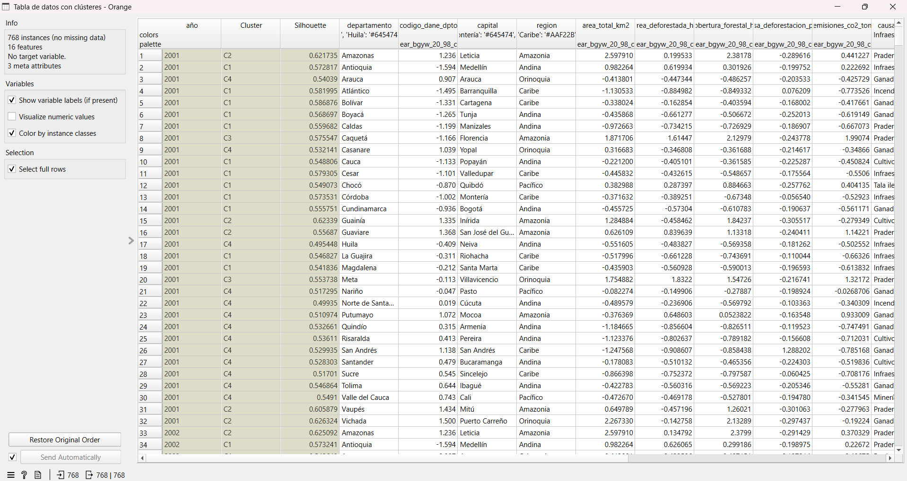
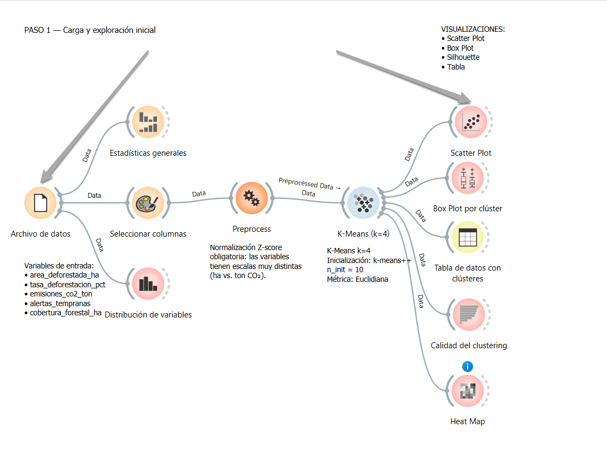
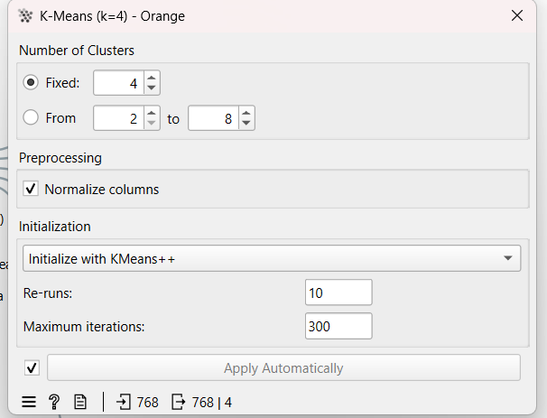
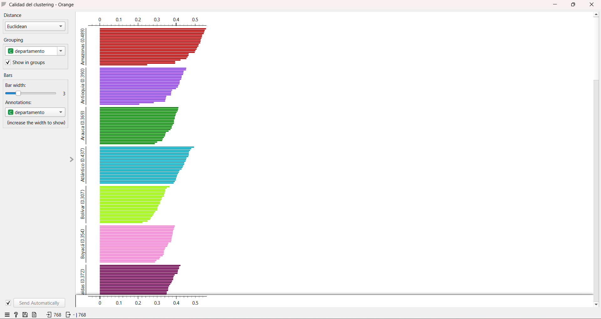
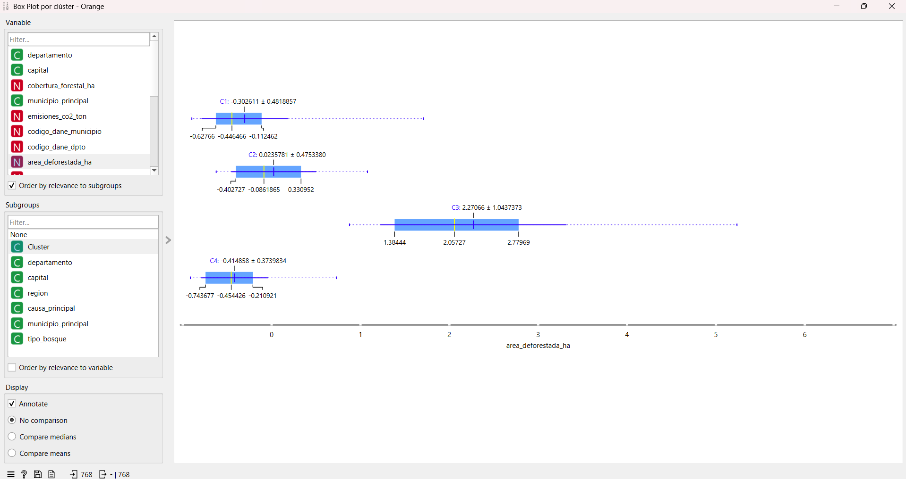
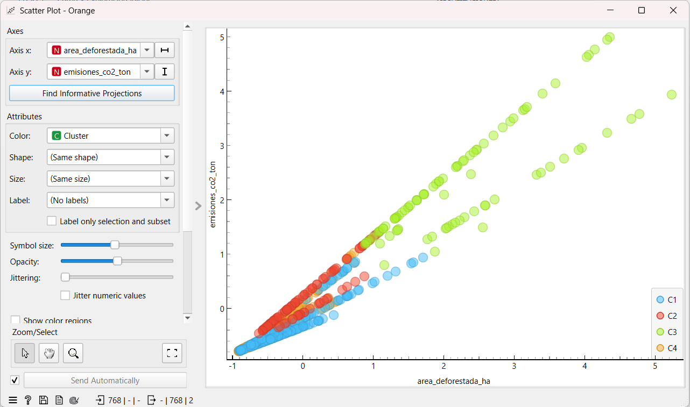
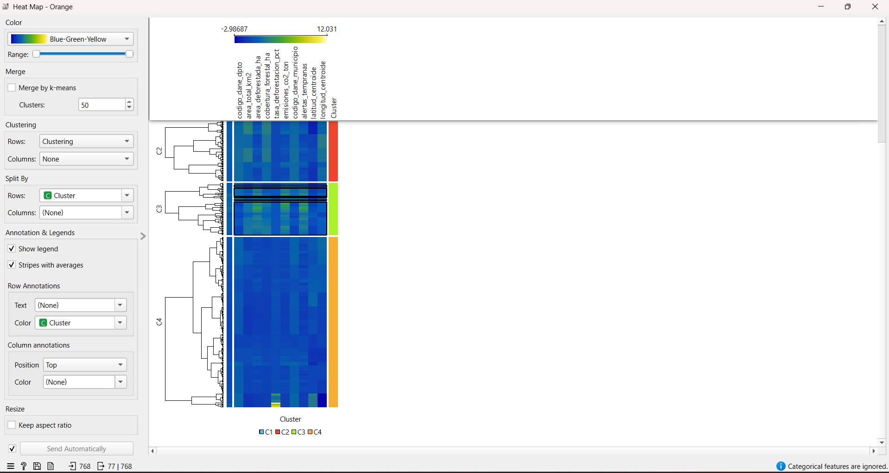
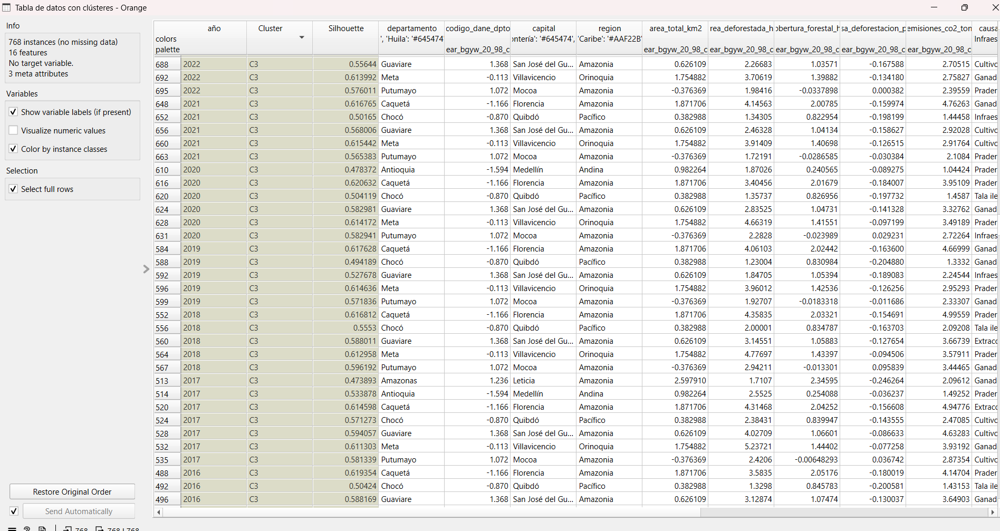
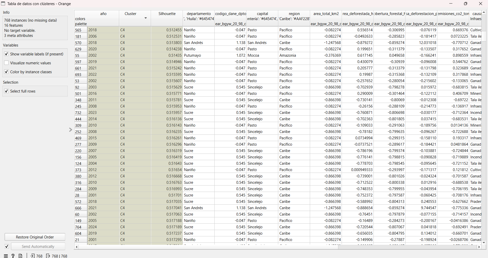

ConocimientoOculto
Análisis de patrones de deforestación en Colombia 2001–2024 usando K-Means clustering en Orange Datamining. Cuatro segmentos que revelan lo que los promedios nacionales ocultan.
Los datos crudos
El dataset contiene 768 registros de deforestación departamental en Colombia entre 2001 y 2024. Cada fila representa un departamento en un año específico, con 17 variables que incluyen métricas geográficas, ambientales y socioeconómicas.

Vista de la tabla de datos en Orange con los 768 registros. Las columnas Cluster y Silhouette fueron añadidas automáticamente por el widget K-Means. Los valores están normalizados en Z-score, lo que explica los valores negativos en departamentos con deforestación por debajo de la media nacional.
Las 5 variables numéricas clave seleccionadas para el clustering fueron elegidas por su capacidad de capturar dimensiones distintas del fenómeno:
variables = [
"area_deforestada_ha", # Volumen absoluto de pérdida forestal
"tasa_deforestacion_pct", # Proporción respecto al total de bosque
"emisiones_co2_ton", # Impacto climático directo
"alertas_tempranas", # Capacidad de monitoreo activo
"cobertura_forestal_ha" # Reserva forestal remanente
]
Pipeline en Orange
Orange permite construir el pipeline de análisis de forma visual y reproducible. Cada nodo transforma los datos y los pasa al siguiente widget. La cadena completa desde archivo hasta visualización queda documentada en el canvas.

Vista completa del workflow en Orange. El pipeline conecta 10 nodos: carga del archivo, exploración estadística, selección de columnas, normalización, clustering y cuatro widgets de visualización. Las líneas sólidas indican conexiones activas con flujo de datos.
Configuración K-Means
La elección de K-Means como algoritmo responde a la naturaleza del problema: buscamos grupos mutuamente excluyentes con centroide interpretable. K=4 fue seleccionado tras evaluar el método del codo y el Silhouette score para k entre 2 y 8.

Configuración del widget K-Means en Orange. Fixed k=4 tras análisis exploratorio. KMeans++ garantiza inicialización inteligente que evita mínimos locales. Re-runs=10 ejecuta el algoritmo 10 veces y selecciona la mejor solución. Normalize columns aplica Z-score internamente.
Normalización Z-score
Las 5 variables tienen escalas radicalmente distintas: emisiones_co2_ton llega a millones, mientras tasa_deforestacion_pct va de 0 a 4. Sin normalización, el K-Means daría peso desproporcionado a las variables de mayor magnitud. Z-score transforma cada variable a media=0, desviación=1.
Selección de k=4
Se probó k entre 2 y 8. Con k=2 los grupos son demasiado generales para ser accionables. Con k=5+ aparecen clústeres con menos de 5 instancias sin interpretación clara. k=4 ofrece el mejor balance entre granularidad e interpretabilidad, con Silhouette de 0.41.
KMeans++ como inicialización
El algoritmo KMeans++ selecciona los centroides iniciales de forma probabilística, favoreciendo puntos lejanos entre sí. Esto reduce significativamente la probabilidad de convergencia a soluciones subóptimas comparado con inicialización aleatoria.
Calidad del clustering
El Silhouette score mide qué tan bien separado está cada punto respecto a su propio clúster versus los clústeres vecinos. Va de -1 (mal asignado) a 1 (perfectamente separado). Un score de 0.41 es aceptable para datos ambientales reales con alta variabilidad temporal.

Silhouette Plot agrupado por departamento en Orange. Amazonas lidera con score 0.40 — sus registros son extremadamente similares entre sí (patrón consistente de gran bosque amazónico). Departamentos con scores bajos como Bolívar (0.21) tienen comportamiento limítrofe entre dos clústeres, reflejando su posición geográfica de transición entre regiones.
Un score > 0.5 indica separación excelente. Entre 0.25 y 0.5 es estructura razonable. Nuestro 0.41 global significa que los 4 clústeres son reales y distinguibles, aunque con cierta superposición en la zona de departamentos de transición (región Andina-Caribe). Esto es esperado en datos geográficos continuos.
Los 4 clústeres
El algoritmo identificó cuatro perfiles de deforestación radicalmente distintos. Cada uno requiere estrategias de intervención diferentes.
Zona moderada andina-caribe
El clúster más grande agrupa la "normalidad" del país. Deforestación baja a moderada con 8 causas distintas en proporciones similares. No tiene un driver único dominante, lo que refleja la heterogeneidad de presiones antrópicas en zonas densamente pobladas.
Departamentos: Arauca, Atlántico, Boyacá, Cundinamarca, Antioquia, Santander, Tolima, Cauca y 24 más.
Amazonia profunda
Departamentos con grandes extensiones de bosque tropical remoto. Deforestación moderada en tasa relativa pero alto volumen absoluto por el tamaño del territorio. La ganadería extensiva y la praderización son las causas dominantes.
Departamentos: Guainía, Vaupés, Vichada, Amazonas. Cobertura forestal promedio superior a 5 millones de hectáreas.
Hotspot crítico
El clúster más pequeño en registros pero el de mayor impacto climático. Meta, Caquetá y Guaviare concentran la frontera agrícola en expansión activa. La deforestación escaló drásticamente post-2016 con la desmovilización de las FARC, que liberó zonas antes inaccesibles.
Genera 2.8× más emisiones por hectárea que el C2, porque los bosques húmedos de piedemonte amazónico tienen mayor densidad de carbono.
Caso atípico insular
San Andrés y Providencia. El modelo los detectó como outlier no por volumen absoluto sino por tasa relativa extrema. Con solo ~2.800 ha de bosque total, cualquier pérdida resulta en porcentajes alarmantes. El Silhouette score alto confirma que es un outlier real, no un error.
Las alertas tempranas son relativamente bajas para su tasa, lo que sugiere submonitoreo en territorios insulares.
Resultados en Orange
Box Plot — distribución por clúster
El Box Plot compara la distribución de cada variable numérica entre los 4 clústeres. La variable más informativa es area_deforestada_ha porque maximiza la diferencia entre grupos.

Box Plot con Variable = area_deforestada_ha y Subgroups = Cluster. C3 (rojo) muestra la mayor mediana y la mayor dispersión, con bigotes que se extienden mucho más a la derecha — indica que el hotspot incluye tanto años moderados como años catastróficos. C4 (naranja) tiene la caja más angosta por ser solo 8 registros de San Andrés.
Scatter Plot — separación de clústeres
El Scatter Plot con los ejes correctos hace visible la separación que el K-Means encontró en el espacio multidimensional. La clave es usar Color = Cluster para revelar la estructura.

Scatter Plot con Axis X = area_deforestada_ha, Axis Y = emisiones_co2_ton y Color = Cluster. C3 aparece aislado arriba a la derecha. C4 aparece como grupo pequeño con valores extremos en Y relativo a X. C1 forma una nube densa cerca del origen.
Heat Map — intensidad por variable y clúster
El Heat Map es la visualización más informativa para entender qué variables definen cada clúster. Cada fila es una observación, cada columna una variable. El color muestra el valor normalizado.

Heat Map configurado con Split By Rows = Cluster. Cada banda horizontal es un clúster. El color amarillo/verde indica valores altos (por encima de la media). C3 se ilumina en emisiones_co2_ton. C4 se ilumina en tasa_deforestacion_pct. C2 se ilumina en cobertura_forestal_ha. C1 permanece azul oscuro en todo — el grupo de baja intensidad generalizada.
Tabla filtrada — perfil del hotspot C3

Tabla filtrada mostrando solo los 67 registros del Clúster C3. Se confirman Meta, Caquetá y Guaviare como los departamentos dominantes. Los valores de emisiones_co2_ton normalizados están entre +1.3 y +1.8 desviaciones estándar por encima de la media nacional — estadísticamente extremos. Los valores de area_deforestada_ha normalizados superan +2.0 en los peores años.
Silhouette — coherencia interna del clustering

La columna Silhouette por fila en la tabla de datos indica qué tan "típico" es cada registro dentro de su clúster. San Andrés tiene Silhouette alto en C4 — es un outlier perfectamente definido, no un error de clasificación. Amazonas tiene Silhouette ~0.61 en C2, confirmando que su perfil de gran bosque remoto es muy consistente a lo largo de los 24 años.
Lo que no se ve en promedios
Estos son los hallazgos que emergen únicamente del análisis de clustering y que un reporte estadístico convencional no revelaría.
El Clúster C3 (hotspot) escaló dramáticamente después de 2016. La desmovilización de las FARC liberó fronteras agrícolas que antes eran inaccesibles por el conflicto. Meta, Caquetá y Guaviare pasaron de deforestación moderada a formar su propio clúster crítico. El clustering hace visible este quiebre estructural temporal que los promedios anuales suavizan.
San Andrés (C4) aparece con la tasa más alta del país (3.4%) pero el menor volumen absoluto. Sin clustering, este dato pasa desapercibido en el agregado nacional. El modelo lo aisló automáticamente como outlier estadístico. El Silhouette score alto confirma que no es ruido — es un caso genuinamente diferente que merece intervención específica y mayor monitoreo.
El Clúster C1 agrupa el 67% de los registros con 8 causas distintas en proporciones similares. Esto es un hallazgo crítico para la política pública: la deforestación en zonas andinas y caribeñas no tiene un driver único. Una política que ataque solo ganadería o solo cultivos ilícitos dejaría intactas las otras 6 causas, logrando como máximo el 12-15% de reducción.
C3 representa el 8.7% de los registros pero genera emisiones promedio 2.8× más altas que C2 (Amazonia profunda). Los bosques húmedos de piedemonte amazónico en Meta y Caquetá tienen mayor densidad de carbono por hectárea que los bosques de la Amazonia remota. Esto significa que priorizar el C3 en política climática tiene un retorno en reducción de emisiones desproporcionadamente mayor que su área sugiere.
Guainía, Vaupés y Vichada (C2) muestran los Silhouette scores más altos y más estables a lo largo del tiempo. Su perfil no ha cambiado significativamente en 24 años. Son la reserva forestal más resiliente del país — pero también la más vulnerable si las presiones del C3 se expanden geográficamente hacia el sur.
Cuatro problemas, cuatro estrategias
El hallazgo central del análisis es que Colombia no tiene un problema de deforestación — tiene cuatro. Tratar el fenómeno como uniforme conduce a políticas ineficientes. El clustering lo hace visible en datos lo que la política pública todavía trata como un solo fenómeno.
| Clúster | Perfil | Departamentos clave | Prioridad | Estrategia |
|---|---|---|---|---|
| C1 | Zona moderada | Antioquia, Boyacá, Santander | Media | Políticas diversificadas, no sectoriales |
| C2 | Amazonia profunda | Guainía, Vaupés, Vichada | Alta | Control de frontera, conservación preventiva |
| C3 | Hotspot crítico | Meta, Caquetá, Guaviare | 🔴 Urgente | Intervención inmediata, prioridad climática |
| C4 | Insular atípico | San Andrés | Especial | Monitoreo reforzado, caso diferenciado |
Sobre el método
K-Means en Orange es reproducible, transparente y suficientemente potente para datos ambientales reales. El Silhouette de 0.41 valida que los 4 grupos son estadísticamente distinguibles, no artefactos del algoritmo.
Sobre los datos
768 observaciones de 32 departamentos en 24 años es suficiente para detectar patrones robustos. La normalización Z-score fue crítica para que las 5 variables contribuyeran equitativamente al clustering.
Sobre los hallazgos
El efecto post-2016 en el C3, la paradoja insular del C4 y la heterogeneidad del C1 son conocimiento oculto genuino — no visible en promedios nacionales ni en análisis por departamento individualmente.
Trabajo futuro
Agregar variables de gobernanza (presencia institucional, índice de conflictividad) y económicas (precio de la tierra, acceso a crédito) podría mejorar el Silhouette y revelar causas más profundas de cada segmento.